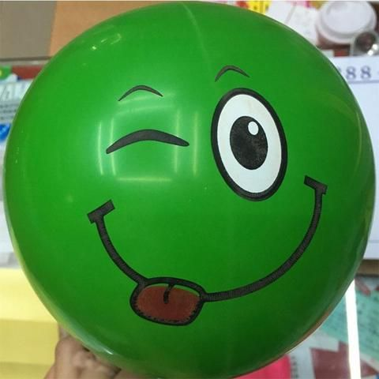
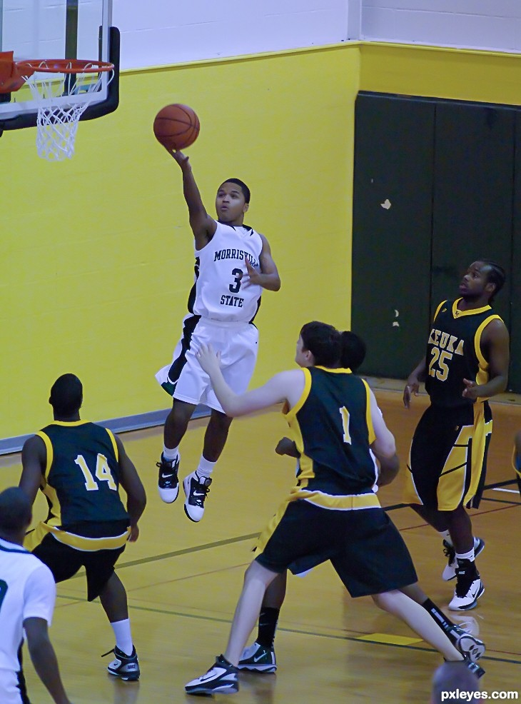

The Klutz:
When I was younger I decided I would see what happens if I could roll down the stairs. I cracked my head
open and had to go to the hospital. I also one tried to open a door but lost grip on the handle and then
cracked my head open again. I also one tripped up when I was younger and knocked my two front teeth back
into my gum and knocked out two others.
The Failed Musican:
In my life I have started to learn 5 instruments but after a some time stopped lessons for each one of them. The instruments were Violin, Cello, Trombone, Singing, Piano. I like to think I could pick any of them up and still give it a good go but I know I have probably forgotten almost everything. I stopped most of them because I was never any good but in Israel I've had no time anyway
In my life I have started to learn 5 instruments but after a some time stopped lessons for each one of them. The instruments were Violin, Cello, Trombone, Singing, Piano. I like to think I could pick any of them up and still give it a good go but I know I have probably forgotten almost everything. I stopped most of them because I was never any good but in Israel I've had no time anyway
The Embarassing Barmitzvah:While at the
religious shul service of a friend's barmitzvah I decidded it would be a good idea to play football at
the front of this shul to
pass the time with some friends. We one of those rubber beach balls. I was very out of practice and one
time when I tried to pass the ball I put my foot on the ball and tripped over. I shattered my Ulna and
badly bent the radius in my arm. I never made it to Shabbat lunch and missed the function. Luckily I was
out of the cast by my own barmitzvah.

The Failed School Production:
I was cast for the role as Captain Hook in school when I was 12. During the second night I swung my hooked hand backwards so fast I lost grip on the prop and sent it flying across the room to hit an audience member. In an attempt to salvage something I hooked my finger and said my remaining line and quickly ran off the stage before people saw I broke character. I was called Captain Hookless for ages.
I was cast for the role as Captain Hook in school when I was 12. During the second night I swung my hooked hand backwards so fast I lost grip on the prop and sent it flying across the room to hit an audience member. In an attempt to salvage something I hooked my finger and said my remaining line and quickly ran off the stage before people saw I broke character. I was called Captain Hookless for ages.
The Worst Bucket:
In the fourth quarter of the semi final match of the U16 basketball tournament I got confused after my team mate missed his second free-throw. I was so excited about winning the rebound that I immediately did a lay up and was happy that I scored until I realised it was an offensive free-throw. I was subbed off immediately and didn't play for the remaining few minutes. We were well ahead and won the game ny about 10 points.

In the fourth quarter of the semi final match of the U16 basketball tournament I got confused after my team mate missed his second free-throw. I was so excited about winning the rebound that I immediately did a lay up and was happy that I scored until I realised it was an offensive free-throw. I was subbed off immediately and didn't play for the remaining few minutes. We were well ahead and won the game ny about 10 points.
Lost in Translation:
While late to a doctor's appointment at Maccabi for an injury I ran in and put my Maccabi card in to the machine. When I realised it wasn't showing my appointment I went to the receptionist who didn't speake great English and tried to explain. 5 minutes of miscommunication later another receptionist came down the reception and asked what my appointment was for and when I told her she asked why I was in Maccabi dentist for an injury.
While late to a doctor's appointment at Maccabi for an injury I ran in and put my Maccabi card in to the machine. When I realised it wasn't showing my appointment I went to the receptionist who didn't speake great English and tried to explain. 5 minutes of miscommunication later another receptionist came down the reception and asked what my appointment was for and when I told her she asked why I was in Maccabi dentist for an injury.